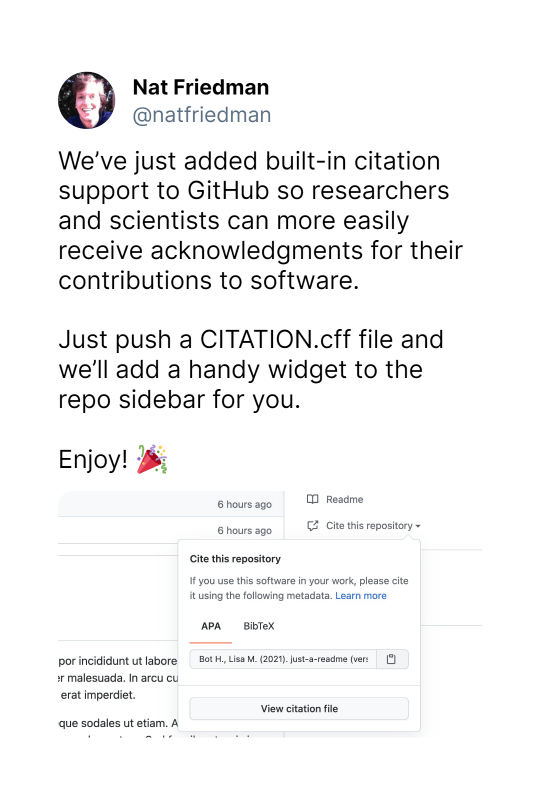

cffr provides utilities to generate, coerce, modify and validate CITATION.cff files automatically for R packages, as well as tools and examples for working with .cff more generally.
What is a CITATION.cff file?
Citation File Format (CFF) (Druskat et al. 2021) (v1.2.0) are plain text files with human- and machine-readable citation information for software (and datasets). Code developers can include them in their repositories to let others know how to correctly cite their software.
This format is becoming popular within the software citation ecosystem. Recently GitHub, Zenodo and Zotero have included full support of this citation format (Druskat 2021). GitHub support is of special interest:

— Nat Friedman (@natfriedman) July 27, 2021
See Enhanced support for citations on GitHub (Smith 2021) for more info.
Related projects
The CodeMeta Project (Jones et al. 2017) creates a concept vocabulary that can be used to standardize the exchange of software metadata across repositories and organizations. One of the many uses of a codemeta.json file (created following the standards defined on The CodeMeta Project) is to provide citation metadata such as title, authors, publication year, and venue (Fenner 2021). The packages codemeta (Boettiger and Salmon 2021a) / codemetar (Boettiger and Salmon 2021b) allows to generate codemeta.json files from R packages metadata.
The cffr package
cffr maximizes the data extraction by using both the DESCRIPTION file and the CITATION file (if present) of your package. Note that cffr works best if your package pass R CMD check/devtools::check().
As per 2024-03-24 there are at least 312 repos on GitHub using cffr. Check them out here.
Installation
Install cffr from CRAN:
install.packages("cffr")You can install the developing version of cffr with:
devtools::install_github("ropensci/cffr")Alternatively, you can install cffr using the r-universe:
# Install cffr in R:
install.packages("cffr",
repos = c("https://ropensci.r-universe.dev", "https://cloud.r-project.org")
)Example
By default most often from within your package folder you’ll simply run cff_write(), that creates a cff object, write it on a CITATION.cff file and validates it on a single command:
library(cffr)
# For in-development packages
cff_write()
#>
#> CITATION.cff generated
#>
#> cff_validate results-----
#> Congratulations! This .cff file is validHowever, cffr provides also custom print methods and mechanisms that allows you to customize the CITATION.cff and integrate them in your workflows.
This is a basic example which shows you how to create a cff object (see ?cff for more info). In this case, we are creating a cff object from the metadata of the rmarkdown package:
library(cffr)
# Example with an installed package
test <- cff_create("rmarkdown")CITATION.cff for rmarkdown
cff-version: 1.2.0
message: 'To cite package "rmarkdown" in publications use:'
type: software
license: GPL-3.0-only
title: 'rmarkdown: Dynamic Documents for R'
version: '2.26'
abstract: Convert R Markdown documents into a variety of formats.
authors:
- family-names: Allaire
given-names: JJ
email: jj@posit.co
- family-names: Xie
given-names: Yihui
email: xie@yihui.name
orcid: https://orcid.org/0000-0003-0645-5666
- family-names: Dervieux
given-names: Christophe
email: cderv@posit.co
orcid: https://orcid.org/0000-0003-4474-2498
- family-names: McPherson
given-names: Jonathan
email: jonathan@posit.co
- family-names: Luraschi
given-names: Javier
- family-names: Ushey
given-names: Kevin
email: kevin@posit.co
- family-names: Atkins
given-names: Aron
email: aron@posit.co
- family-names: Wickham
given-names: Hadley
email: hadley@posit.co
- family-names: Cheng
given-names: Joe
email: joe@posit.co
- family-names: Chang
given-names: Winston
email: winston@posit.co
- family-names: Iannone
given-names: Richard
email: rich@posit.co
orcid: https://orcid.org/0000-0003-3925-190X
preferred-citation:
type: manual
title: 'rmarkdown: Dynamic Documents for R'
authors:
- family-names: Allaire
given-names: JJ
email: jj@posit.co
- family-names: Xie
given-names: Yihui
email: xie@yihui.name
orcid: https://orcid.org/0000-0003-0645-5666
- family-names: Dervieux
given-names: Christophe
email: cderv@posit.co
orcid: https://orcid.org/0000-0003-4474-2498
- family-names: McPherson
given-names: Jonathan
email: jonathan@posit.co
- family-names: Luraschi
given-names: Javier
- family-names: Ushey
given-names: Kevin
email: kevin@posit.co
- family-names: Atkins
given-names: Aron
email: aron@posit.co
- family-names: Wickham
given-names: Hadley
email: hadley@posit.co
- family-names: Cheng
given-names: Joe
email: joe@posit.co
- family-names: Chang
given-names: Winston
email: winston@posit.co
- family-names: Iannone
given-names: Richard
email: rich@posit.co
orcid: https://orcid.org/0000-0003-3925-190X
year: '2024'
notes: R package version 2.26
url: https://github.com/rstudio/rmarkdown
repository: https://CRAN.R-project.org/package=rmarkdown
repository-code: https://github.com/rstudio/rmarkdown
url: https://pkgs.rstudio.com/rmarkdown/
date-released: '2024-03-05'
contact:
- family-names: Xie
given-names: Yihui
email: xie@yihui.name
orcid: https://orcid.org/0000-0003-0645-5666
keywords:
- literate-programming
- markdown
- pandoc
- r
- r-package
- rmarkdown
references:
- type: book
title: 'R Markdown: The Definitive Guide'
authors:
- family-names: Xie
given-names: Yihui
- family-names: Allaire
given-names: J.J.
- family-names: Grolemund
given-names: Garrett
publisher:
name: Chapman and Hall/CRC
address: Boca Raton, Florida
year: '2018'
isbn: '9781138359338'
url: https://bookdown.org/yihui/rmarkdown
- type: book
title: R Markdown Cookbook
authors:
- family-names: Xie
given-names: Yihui
- family-names: Dervieux
given-names: Christophe
- family-names: Riederer
given-names: Emily
publisher:
name: Chapman and Hall/CRC
address: Boca Raton, Florida
year: '2020'
isbn: '9780367563837'
url: https://bookdown.org/yihui/rmarkdown-cookbook
- type: software
title: 'R: A Language and Environment for Statistical Computing'
notes: Depends
url: https://www.R-project.org/
authors:
- name: R Core Team
institution:
name: R Foundation for Statistical Computing
address: Vienna, Austria
year: '2024'
version: '>= 3.0'
- type: software
title: bslib
abstract: 'bslib: Custom ''Bootstrap'' ''Sass'' Themes for ''shiny'' and ''rmarkdown'''
notes: Imports
url: https://rstudio.github.io/bslib/
repository: https://CRAN.R-project.org/package=bslib
authors:
- family-names: Sievert
given-names: Carson
email: carson@posit.co
orcid: https://orcid.org/0000-0002-4958-2844
- family-names: Cheng
given-names: Joe
email: joe@posit.co
- family-names: Aden-Buie
given-names: Garrick
email: garrick@posit.co
orcid: https://orcid.org/0000-0002-7111-0077
year: '2024'
version: '>= 0.2.5.1'
- type: software
title: evaluate
abstract: 'evaluate: Parsing and Evaluation Tools that Provide More Details than
the Default'
notes: Imports
url: https://github.com/r-lib/evaluate
repository: https://CRAN.R-project.org/package=evaluate
authors:
- family-names: Wickham
given-names: Hadley
- family-names: Xie
given-names: Yihui
email: xie@yihui.name
orcid: https://orcid.org/0000-0003-0645-5666
year: '2024'
version: '>= 0.13'
- type: software
title: fontawesome
abstract: 'fontawesome: Easily Work with ''Font Awesome'' Icons'
notes: Imports
url: https://rstudio.github.io/fontawesome/
repository: https://CRAN.R-project.org/package=fontawesome
authors:
- family-names: Iannone
given-names: Richard
email: rich@posit.co
orcid: https://orcid.org/0000-0003-3925-190X
year: '2024'
version: '>= 0.5.0'
- type: software
title: htmltools
abstract: 'htmltools: Tools for HTML'
notes: Imports
url: https://rstudio.github.io/htmltools/
repository: https://CRAN.R-project.org/package=htmltools
authors:
- family-names: Cheng
given-names: Joe
email: joe@posit.co
- family-names: Sievert
given-names: Carson
email: carson@posit.co
orcid: https://orcid.org/0000-0002-4958-2844
- family-names: Schloerke
given-names: Barret
email: barret@posit.co
orcid: https://orcid.org/0000-0001-9986-114X
- family-names: Chang
given-names: Winston
email: winston@posit.co
orcid: https://orcid.org/0000-0002-1576-2126
- family-names: Xie
given-names: Yihui
email: yihui@posit.co
- family-names: Allen
given-names: Jeff
year: '2024'
version: '>= 0.5.1'
- type: software
title: jquerylib
abstract: 'jquerylib: Obtain ''jQuery'' as an HTML Dependency Object'
notes: Imports
repository: https://CRAN.R-project.org/package=jquerylib
authors:
- family-names: Sievert
given-names: Carson
email: carson@rstudio.com
orcid: https://orcid.org/0000-0002-4958-2844
- family-names: Cheng
given-names: Joe
email: joe@rstudio.com
year: '2024'
- type: software
title: jsonlite
abstract: 'jsonlite: A Simple and Robust JSON Parser and Generator for R'
notes: Imports
url: https://jeroen.r-universe.dev/jsonlite
repository: https://CRAN.R-project.org/package=jsonlite
authors:
- family-names: Ooms
given-names: Jeroen
email: jeroen@berkeley.edu
orcid: https://orcid.org/0000-0002-4035-0289
year: '2024'
- type: software
title: knitr
abstract: 'knitr: A General-Purpose Package for Dynamic Report Generation in R'
notes: Imports
url: https://yihui.org/knitr/
repository: https://CRAN.R-project.org/package=knitr
authors:
- family-names: Xie
given-names: Yihui
email: xie@yihui.name
orcid: https://orcid.org/0000-0003-0645-5666
year: '2024'
version: '>= 1.43'
- type: software
title: methods
abstract: 'R: A Language and Environment for Statistical Computing'
notes: Imports
authors:
- name: R Core Team
institution:
name: R Foundation for Statistical Computing
address: Vienna, Austria
year: '2024'
- type: software
title: tinytex
abstract: 'tinytex: Helper Functions to Install and Maintain TeX Live, and Compile
LaTeX Documents'
notes: Imports
url: https://github.com/rstudio/tinytex
repository: https://CRAN.R-project.org/package=tinytex
authors:
- family-names: Xie
given-names: Yihui
email: xie@yihui.name
orcid: https://orcid.org/0000-0003-0645-5666
year: '2024'
version: '>= 0.31'
- type: software
title: tools
abstract: 'R: A Language and Environment for Statistical Computing'
notes: Imports
authors:
- name: R Core Team
institution:
name: R Foundation for Statistical Computing
address: Vienna, Austria
year: '2024'
- type: software
title: utils
abstract: 'R: A Language and Environment for Statistical Computing'
notes: Imports
authors:
- name: R Core Team
institution:
name: R Foundation for Statistical Computing
address: Vienna, Austria
year: '2024'
- type: software
title: xfun
abstract: 'xfun: Supporting Functions for Packages Maintained by ''Yihui Xie'''
notes: Imports
url: https://github.com/yihui/xfun
repository: https://CRAN.R-project.org/package=xfun
authors:
- family-names: Xie
given-names: Yihui
email: xie@yihui.name
orcid: https://orcid.org/0000-0003-0645-5666
year: '2024'
version: '>= 0.36'
- type: software
title: yaml
abstract: 'yaml: Methods to Convert R Data to YAML and Back'
notes: Imports
url: https://github.com/vubiostat/r-yaml/
repository: https://CRAN.R-project.org/package=yaml
authors:
- family-names: Garbett
given-names: Shawn P
- family-names: Stephens
given-names: Jeremy
- family-names: Simonov
given-names: Kirill
- family-names: Xie
given-names: Yihui
- family-names: Dong
given-names: Zhuoer
- family-names: Wickham
given-names: Hadley
- family-names: Horner
given-names: Jeffrey
- name: reikoch
- family-names: Beasley
given-names: Will
- family-names: O'Connor
given-names: Brendan
- family-names: Warnes
given-names: Gregory R.
- family-names: Quinn
given-names: Michael
- family-names: Kamvar
given-names: Zhian N.
year: '2024'
version: '>= 2.1.19'
- type: software
title: digest
abstract: 'digest: Create Compact Hash Digests of R Objects'
notes: Suggests
url: https://dirk.eddelbuettel.com/code/digest.html
repository: https://CRAN.R-project.org/package=digest
authors:
- family-names: Lucas
given-names: Dirk Eddelbuettel with contributions by Antoine
email: edd@debian.org
- family-names: Tuszynski
given-names: Jarek
- family-names: Bengtsson
given-names: Henrik
- family-names: Urbanek
given-names: Simon
- family-names: Frasca
given-names: Mario
- family-names: Lewis
given-names: Bryan
- family-names: Stokely
given-names: Murray
- family-names: Muehleisen
given-names: Hannes
- family-names: Murdoch
given-names: Duncan
- family-names: Hester
given-names: Jim
- family-names: Wu
given-names: Wush
- family-names: Kou
given-names: Qiang
- family-names: Onkelinx
given-names: Thierry
- family-names: Lang
given-names: Michel
- family-names: Simko
given-names: Viliam
- family-names: Hornik
given-names: Kurt
- family-names: Neal
given-names: Radford
- family-names: Bell
given-names: Kendon
- family-names: Queljoe
given-names: Matthew
name-particle: de
- family-names: Suruceanu
given-names: Ion
- family-names: Denney
given-names: Bill
- family-names: Schumacher
given-names: Dirk
- family-names: Chang
given-names: Winston
- family-names: Attali
given-names: Dean
- family-names: Chirico.
given-names: Michael
year: '2024'
- type: software
title: dygraphs
abstract: 'dygraphs: Interface to ''Dygraphs'' Interactive Time Series Charting
Library'
notes: Suggests
url: https://github.com/rstudio/dygraphs
repository: https://CRAN.R-project.org/package=dygraphs
authors:
- family-names: Vanderkam
given-names: Dan
website: http://dygraphs.com/
- family-names: Allaire
given-names: JJ
- family-names: Owen
given-names: Jonathan
- family-names: Gromer
given-names: Daniel
- family-names: Thieurmel
given-names: Benoit
year: '2024'
- type: software
title: fs
abstract: 'fs: Cross-Platform File System Operations Based on ''libuv'''
notes: Suggests
url: https://fs.r-lib.org
repository: https://CRAN.R-project.org/package=fs
authors:
- family-names: Hester
given-names: Jim
- family-names: Wickham
given-names: Hadley
email: hadley@rstudio.com
- family-names: Csárdi
given-names: Gábor
email: csardi.gabor@gmail.com
year: '2024'
- type: software
title: rsconnect
abstract: 'rsconnect: Deploy Docs, Apps, and APIs to ''Posit Connect'', ''shinyapps.io'',
and ''RPubs'''
notes: Suggests
url: https://rstudio.github.io/rsconnect/
repository: https://CRAN.R-project.org/package=rsconnect
authors:
- family-names: Atkins
given-names: Aron
email: aron@posit.co
- family-names: Allen
given-names: Toph
- family-names: Wickham
given-names: Hadley
- family-names: McPherson
given-names: Jonathan
- family-names: Allaire
given-names: JJ
year: '2024'
- type: software
title: downlit
abstract: 'downlit: Syntax Highlighting and Automatic Linking'
notes: Suggests
url: https://downlit.r-lib.org/
repository: https://CRAN.R-project.org/package=downlit
authors:
- family-names: Wickham
given-names: Hadley
email: hadley@posit.co
year: '2024'
version: '>= 0.4.0'
- type: software
title: katex
abstract: 'katex: Rendering Math to HTML, ''MathML'', or R-Documentation Format'
notes: Suggests
url: https://docs.ropensci.org/katex/
repository: https://CRAN.R-project.org/package=katex
authors:
- family-names: Ooms
given-names: Jeroen
email: jeroen@berkeley.edu
orcid: https://orcid.org/0000-0002-4035-0289
year: '2024'
version: '>= 1.4.0'
- type: software
title: sass
abstract: 'sass: Syntactically Awesome Style Sheets (''Sass'')'
notes: Suggests
url: https://rstudio.github.io/sass/
repository: https://CRAN.R-project.org/package=sass
authors:
- family-names: Cheng
given-names: Joe
email: joe@rstudio.com
- family-names: Mastny
given-names: Timothy
email: tim.mastny@gmail.com
- family-names: Iannone
given-names: Richard
email: rich@rstudio.com
orcid: https://orcid.org/0000-0003-3925-190X
- family-names: Schloerke
given-names: Barret
email: barret@rstudio.com
orcid: https://orcid.org/0000-0001-9986-114X
- family-names: Sievert
given-names: Carson
email: carson@rstudio.com
orcid: https://orcid.org/0000-0002-4958-2844
year: '2024'
version: '>= 0.4.0'
- type: software
title: shiny
abstract: 'shiny: Web Application Framework for R'
notes: Suggests
url: https://shiny.posit.co/
repository: https://CRAN.R-project.org/package=shiny
authors:
- family-names: Chang
given-names: Winston
email: winston@posit.co
orcid: https://orcid.org/0000-0002-1576-2126
- family-names: Cheng
given-names: Joe
email: joe@posit.co
- family-names: Allaire
given-names: JJ
email: jj@posit.co
- family-names: Sievert
given-names: Carson
email: carson@posit.co
orcid: https://orcid.org/0000-0002-4958-2844
- family-names: Schloerke
given-names: Barret
email: barret@posit.co
orcid: https://orcid.org/0000-0001-9986-114X
- family-names: Xie
given-names: Yihui
email: yihui@posit.co
- family-names: Allen
given-names: Jeff
- family-names: McPherson
given-names: Jonathan
email: jonathan@posit.co
- family-names: Dipert
given-names: Alan
- family-names: Borges
given-names: Barbara
year: '2024'
version: '>= 1.6.0'
- type: software
title: testthat
abstract: 'testthat: Unit Testing for R'
notes: Suggests
url: https://testthat.r-lib.org
repository: https://CRAN.R-project.org/package=testthat
authors:
- family-names: Wickham
given-names: Hadley
email: hadley@posit.co
year: '2024'
version: '>= 3.0.3'
- type: software
title: tibble
abstract: 'tibble: Simple Data Frames'
notes: Suggests
url: https://tibble.tidyverse.org/
repository: https://CRAN.R-project.org/package=tibble
authors:
- family-names: Müller
given-names: Kirill
email: kirill@cynkra.com
orcid: https://orcid.org/0000-0002-1416-3412
- family-names: Wickham
given-names: Hadley
email: hadley@rstudio.com
year: '2024'
- type: software
title: vctrs
abstract: 'vctrs: Vector Helpers'
notes: Suggests
url: https://vctrs.r-lib.org/
repository: https://CRAN.R-project.org/package=vctrs
authors:
- family-names: Wickham
given-names: Hadley
email: hadley@posit.co
- family-names: Henry
given-names: Lionel
email: lionel@posit.co
- family-names: Vaughan
given-names: Davis
email: davis@posit.co
year: '2024'
- type: software
title: cleanrmd
abstract: 'cleanrmd: Clean Class-Less ''R Markdown'' HTML Documents'
notes: Suggests
url: https://pkg.garrickadenbuie.com/cleanrmd/
repository: https://CRAN.R-project.org/package=cleanrmd
authors:
- family-names: Aden-Buie
given-names: Garrick
email: garrick@adenbuie.com
orcid: https://orcid.org/0000-0002-7111-0077
year: '2024'
- type: software
title: withr
abstract: 'withr: Run Code ''With'' Temporarily Modified Global State'
notes: Suggests
url: https://withr.r-lib.org
repository: https://CRAN.R-project.org/package=withr
authors:
- family-names: Hester
given-names: Jim
- family-names: Henry
given-names: Lionel
email: lionel@posit.co
- family-names: Müller
given-names: Kirill
email: krlmlr+r@mailbox.org
- family-names: Ushey
given-names: Kevin
email: kevinushey@gmail.com
- family-names: Wickham
given-names: Hadley
email: hadley@posit.co
- family-names: Chang
given-names: Winston
year: '2024'
version: '>= 2.4.2'We can validate the result using cff_validate():
cff_validate(test)
#> ══ Validating cff ══════════════════════════════════════════════════════════════
#> ✔ Congratulations! This <cff> is validCheck the docs and vignette("cffr", package = "cffr") to learn how to work with cff objects.
Keep your CITATION.cff file up-to-date
GitHub Actions
The easiest way for keeping you CITATION.cff file up-to-date is using GitHub Actions. Use cff_gha_update()function to install a GitHub Action that would update your CITATION.cff file on the following events:
- When you publish a new release of the package on your GitHub repo.
- Each time that you modify your DESCRIPTION or inst/CITATION files.
- The action can be run also manually.
cff_gha_update()
#> Installing update-citation-cff.yaml on './.github/workflows'
#> Adding .github to .RbuildignoreSee the example workflow file here.
Git pre-commit hook 
You can also use a git pre-commit hook:
The
pre-commithook is run first, before you even type in a commit message. It’s used to inspect the snapshot that’s about to be committed, to see if you’ve forgotten something, to make sure tests run, or to examine whatever you need to inspect in the code. Exiting non-zero from this hook aborts the commit, although you can bypass it withgit commit --no-verify.
A specific pre-commit hook can be installed with cff_git_hook_install(). If you want to use a pre-commit hook, please make sure you have the testthat package installed.
Related packages
-
citation (Dietrich and Leoncio 2022) includes a function
r2cffthat creates aCITATION.cfffile (v1.1.0) using the information of yourDESCRIPTIONfile. It also provide minimal validity checks. -
handlr (Chamberlain 2022): Tool for converting among citation formats, including
*.cfffiles. -
codemeta (Boettiger and Salmon 2021a) / codemetar (Boettiger and Salmon 2021b) provides similar solutions for creating
codemeta.jsonfile, another format for storing and sharing software metadata.
Citation
Hernangómez, D., (2021). cffr: Generate Citation File Format Metadata for R Packages. Journal of Open Source Software, 6(67), 3900, https://doi.org/10.21105/joss.03900
A BibTeX entry for LaTeX users is:
@article{hernangomez2021,
title = {{cffr}: Generate Citation File Format Metadata for {R} Packages},
author = {Diego Hernangómez},
year = 2021,
journal = {Journal of Open Source Software},
publisher = {The Open Journal},
volume = 6,
number = 67,
pages = 3900,
doi = {10.21105/joss.03900},
url = {https://doi.org/10.21105/joss.03900}
}You can also use the citation provided by GitHub, that is generated from the information of a CITATION.cff created with cffr. See About CITATION files for more info.